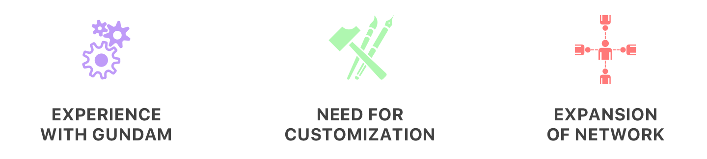
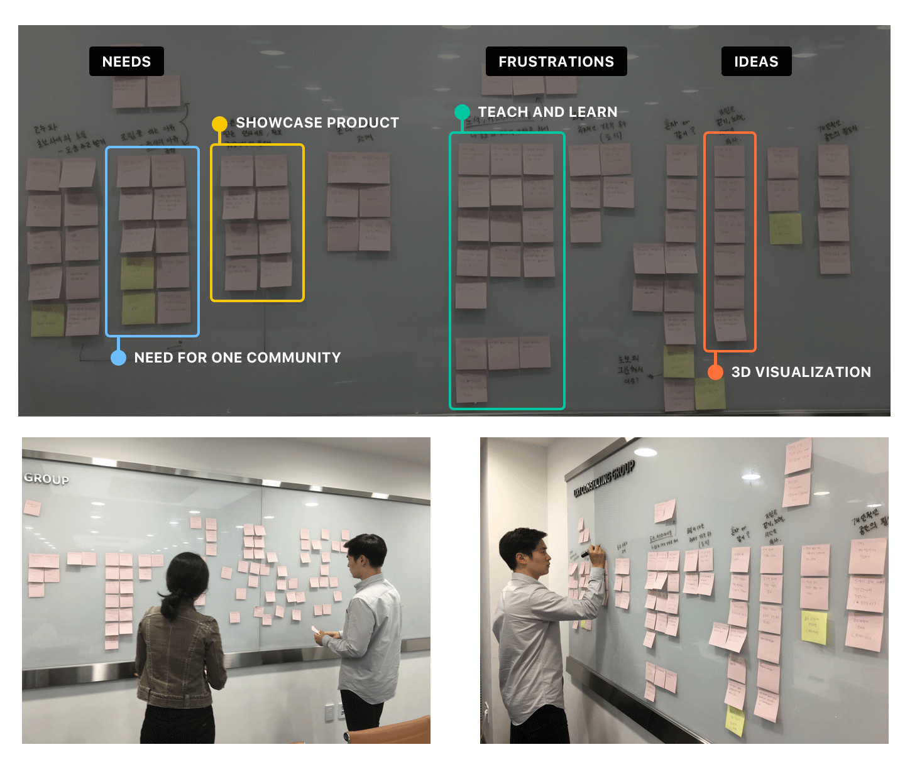
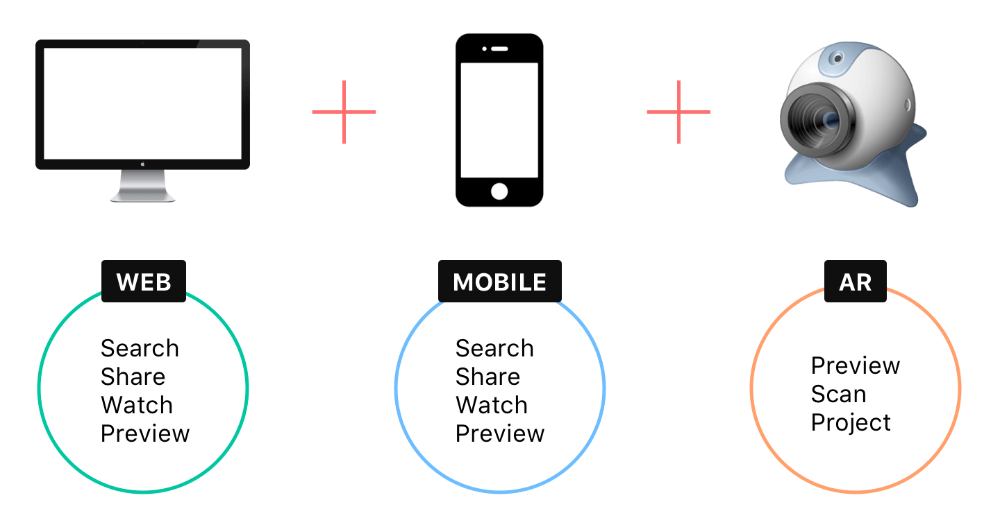
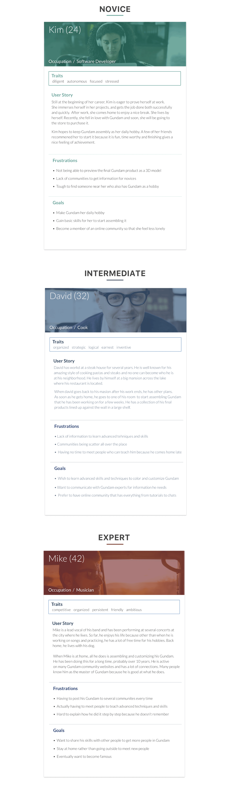

Gundam Maniacs is a Web and Mobile platform which allows the users to share information and showcase their Gundam products. Gundam is a fictional robot character which is built from hundreds of small pieces that comes together in a package. During the research phase, we discovered that there was a great need for an online community which the starting users can gain information, intermediate users to learn advanced skills and for the experts to showcase their final products.
In order to satisfy the three different user types for this project, we came up with a solution to develop a Web and Mobile platform which connects to the Augmented Reality device. The purpose of the Augmented Reality device is to first, scan the Gundam situated in real space to retrieve its unique information. This helps the expert users when showcasing their final, customized product because it scans the parts of the Gundam in 3D which are different from the default final product. Secondly, the AR device allows the intermediate users to customize their Gundam virtually, rather than taking a risk to destroy their hard work. Lastly, for the starting users, it allows them to preview what they want to purchase in 3D.
I participated in interviews, created surveys and conducted several contextual inquiries. During our iterative design phase, I took charge in designing both lo-fi and hi-fi sketches. Lastly, I created the Gundam Maniacs App prototype with Framer.js.
March 2016 - July 2016
Geunbae Lee | Suk Hui Hong | Eun Hee Kim
Invision | Framer.js | Sketch | Keynote
The objective of the project was to first identify the unique user group which consists of various people living alone. Then, we researched on their hobbies to come up with a technology that may help them in improving their social interaction with others who are in the same situation. This way, we thought it would create a new way for those who live alone to interact with each other based on their hobbies.
 During the preliminary research, we discovered that many of the people liked to build and craft things. Within those more specific user group, a portion of them built Gundam, which are fictional robot characters. What was interesting about Gundam was that it not only needs a lot of time and skills to assemble but also, skilled users went even further to customize their final products.
In hoping to know more about the users and about Gundam, we conducted interviews (FGI), surveys and contextual inquiries. During the research phase, we were able to spot three distinct user types: 1) starters, 2) intermediate level users and 3) experts. Each user types had different needs toward Gundam and through modeling and brainstorming, we tried to come up with a technology that would assist in satisfying their needs.
Based on the interviews and the contextual inquiries results, we invested time in trying to group the users' needs as well as their thoughts and opinions by doing an affinity mapping activity. Categorzing and grouping the wants and needs of the users were what we needed to do in order to move on with our process. During this activity, we learned several important things that should be implemented in our design solution.
Based on our users' needs, we conducted an ideation sprint where we spilled out some of the feasible and wild ideas. We came to a conclusion that it should definitely be supported with both web and mobile. Moreover, we reached an agreement that having an Augmented Reality solution would boost the users' experience. The AR device would connect to either web or desktop platform to scan the Gundam product and display the 3D model in the real space.
We came up with three different persona. This is because through our research, we discovered that there were three different types of users: novice, intermediate and expert level of Gundam users.
